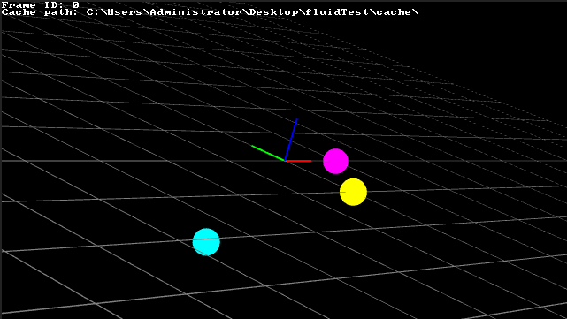
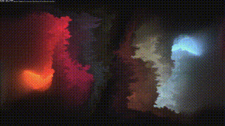

物理シミュレーション
次の動画はnimitzさんが作った作品Chimera's BreathのPixelsWorldにおいて実装した結果です。フルサイズ動画

この章では、PixelsWorldを用いてキャッシュの扱い方を紹介します。
注意：正しいシミュレーション結果を得るために、本マニュアルにきちんと読んだ上でコードを実装してください。
v3.3.3+以上のPixelsWorldが必要です。- この章は、読者が既にAe及びPixelsWorldを深く理解したと仮定して書いたものです。
キャッシュデータ
データをキャッシュするために、次の手順に従ってください。
コード：
- キャッシュの保存する場所とキャッシュファイルの名前を決める
frameId=time*fpsを計算するlastFrameId=frameId-1を計算するlastFrameId< 0 ならば5へ、そうでなければ、6へ。- データを初期化する。7へ
- 前のフレームで保存したデータファイルを読み取る。ファイルがない場合エラーを出力する。他の場合、7へ
- 今のフレームのデータを計算する。
- データをローカルに保存する。
操作：
- 上の手順に満たすコードを実装する。
- Aeの時間カーソルを最初のフレームに移動させる。
- Aeのキャッシュを削除する(
Edit->Purge->All Memory & Disk Cache...下の図に示すように) Ctrl+Altを押しながら、LOGO画像をクリックする。（このステップはオプショナル）- スペースキーを押してレンダリングする。(フレームをスキップしないこと)
注意：何か不具合があったら (エラー、画像キャッシュの不具合など)、2～5をやり直してください。

キャッシュテクスチャ
コード：
- 画像の質が下がったら(例えば：1/2, 1/4 プレビューモード), エラーを出す。
frameId=time*fpsを計算するlastFrameId=frameId-1を計算するlastFrameId< 0 ならば5へ、そうでなければ、6へ。- データを初期化する。7へ
- 前のフレームで保存したデータファイルを読み取る。ファイルがない場合エラーを出力する。他の場合、7へ
- 今のフレームのデータを計算する。
- データをローカルに保存する。
テクスチャの操作方法に関しては、こちらをご覧ください。
操作：
- 上の手順に満たすコードを実装する。
- PixelsWorldパネルの設定の
Advanced->Internal texture formatをFloating point 32bit x RGBA (HDR)にする。 - Aeの時間カーソルを最初のフレームに移動させる。
- Aeのキャッシュを削除する(
Edit->Purge->All Memory & Disk Cache...上の図に示すように) Ctrl+Altを押しながら、LOGO画像をクリックする。（このステップはオプショナル）- スペースキーを押してレンダリングする。(フレームをスキップしないこと)
キャッシュデータ使用例：三体問題

the_three_body_problem.lua
version3()
-- Include vector library
require("veclib")
-- Set cache file name
local cacheFileName = "A"
-- Add checking if file exists function(Refer: https://stackoverflow.com/questions/4990990/check-if-a-file-exists-with-lua)
function file_exists(name)
local f=io.open(name,"r")
if f~=nil then io.close(f) return true else return false end
end
-- Calculate current frame index then round it to integer.
local frameId = math.floor(time * fps + .5)
-- Calculate last frame index
local lastFrameId = frameId -1
-- Frame id should not be negative.
assert(frameId >= 0, "FrameId not support")
-- Print it out. (This line can be removed)
println("Frame ID: " .. frameId)
-- Set cache folder. (Here I used the aep project folder, don't forget to save your project before use projectFolder)
local cachePath = projectFolder .. "cache\\"
-- Print it out. (This line can be removed)
println("Cache path: " .. cachePath)
-- If frameId == 0 (Namely lastFrameId < 0)
if(lastFrameId < 0) then
-- Initialze the position and velocity of 3 planets
p1 = vec3(100,0,0)
v1 = vec3(-0.1,-0.1,-0.5)
p2 = vec3(0,-100,0)
v2 = vec3(0,0.1,0)
p3 = vec3(-100,0,-95)
v3 = vec3(0.1,0,0.5)
else
-- Check if last frame data exists.
if(file_exists(cachePath .. cacheFileName .. "_" .. tostring(lastFrameId) .. ".txt")) then
-- Read last frame data.
lua(loadString(cachePath .. cacheFileName .. "_" .. tostring(lastFrameId) .. ".txt"))
else
-- Throw error when not exists
error("Please go back to frame 0 to re-cache your comp")
end
end
-- Start calculation (simulation)
center = vec3(width/2,height/2,0)
f1,f2,f3 = vec3(0),vec3(0),vec3(0)
r = 15
m1=8
m2=10
m3=5
dp12,dp13,dp23 = p1-p2,p1-p3,p2-p3
f1 = f1 + m1*m2/math.max(dot(dp12,dp12),1e-1) * (-dp12)
f2 = f2 + m1*m2/math.max(dot(dp12,dp12),1e-1) * (dp12)
f1 = f1 + m1*m3/math.max(dot(dp13,dp13),1e-1) * (-dp13)
f3 = f3 + m1*m3/math.max(dot(dp13,dp13),1e-1) * (dp13)
f2 = f2 + m3*m2/math.max(dot(dp23,dp23),1e-1) * (-dp23)
f3 = f3 + m3*m2/math.max(dot(dp23,dp23),1e-1) * (dp23)
v1 = v1 + f1*(1/m1)
p1 = p1 + v1
v2 = v2 + f2*(1/m2)
p2 = p2 + v2
v3 = v3 + f3*(1/m3)
p3 = p3 + v3
-- End simulation
-- Save position and velocity to local
saveString(
cachePath .. cacheFileName .. "_" .. tostring(frameId) .. ".txt",
string.format([==[
p1=vec3(%f,%f,%f);v1=vec3(%f,%f,%f);
p2=vec3(%f,%f,%f);v2=vec3(%f,%f,%f);
p3=vec3(%f,%f,%f);v3=vec3(%f,%f,%f);
]==],
p1.x,p1.y,p1.z,v1.x,v1.y,v1.z,
p2.x,p2.y,p2.z,v2.x,v2.y,v2.z,
p3.x,p3.y,p3.z,v3.x,v3.y,v3.z
)
)
-- Draw three planets with simulation data.
dim3()
move(center.x,center.y,center.z)
-- Draw coordinate and grid.
coord()
grid()
-- 1st planet
beginGroup()
move(p1.x,p1.y,p1.z)
fill(1,0,1)
ball(r)
endGroup()
-- 2nd planet
beginGroup()
fill(1,1,0)
move(p2.x,p2.y,p2.z)
ball(r)
endGroup()
-- 3rd planet
beginGroup()
fill(0,1,1)
move(p3.x,p3.y,p3.z)
ball(r)
endGroup()
キャッシュテクスチャ使用例：ライフゲーム

game_of_life.lua
version3()
-- Check downsample settings.
assert(width == ds_width and height == ds_height , "Downsample not support" )
-- Add checking if file exists function(Refer: https://stackoverflow.com/questions/4990990/check-if-a-file-exists-with-lua)
function file_exists(name)
local f=io.open(name,"r")
if f~=nil then io.close(f) return true else return false end
end
-- Calculate current frame index then round it to integer.
local frameId = math.floor(time * fps + .5)
-- Calculate last frame index
local lastFrameId = frameId -1
-- Frame id should not be negative.
assert(frameId >= 0, "FrameId not support")
-- Print it out. (This line can be removed)
println("Frame ID: " .. frameId)
-- Set cache folder.
local cachePath = projectFolder .. "cache\\"
-- Print it out. (This line can be removed)
println("Cache path: " .. cachePath)
-- Check if it is frame 0
if(lastFrameId < 0) then
-- Initialize texture
lastTexA = newTex(width,height)
else
-- Check if last frame texture exists
if(file_exists(cachePath .. "A_" .. tostring(lastFrameId) .. ".raw")) then
-- Load last frame texture
lastTexA = loadRAW(cachePath .. "A_" .. tostring(lastFrameId) .. ".raw")
else
error("Please go back to frame 0 to cache your comp")
end
end
-- Set render code
local fragCode = [==[
// Definition from: https://en.wikipedia.org/wiki/Conway%27s_Game_of_Life
// MIT license (Free for study and business purpose)
// Code by ZzStarSound
const int dx[8] = int[](-1,0,1,1,1,0,-1,-1);
const int dy[8] = int[](1,1,1,0,-1,-1,-1,0);
bool fetchStatus(int ox, int oy)
{
ivec2 iuv = ivec2(floor(uv*resolution.xy)) + ivec2(ox,oy);
ivec2 res = ivec2(floor(resolution.xy));
if(iuv.x >= res.x || iuv.x < 0 || iuv.y >=res.y || iuv.y<0) return false;
return texelFetch(layer[0],iuv,0).x>.5;
}
// From https://thebookofshaders.com/10/
float random (vec2 st) {
return fract(sin(dot(st.xy, vec2(12.9898,78.233)))* 43758.5453123);
}
void main(){
if(time == 0.)
{
outColor = vec4(random(uv)>.5);
}else{
bool curstatus = fetchStatus(0,0);
int roundCount = 0;
for(int i = 0;i<8;i++){
if(fetchStatus(dx[i],dy[i])) roundCount ++ ;
}
if(curstatus)
{
if(roundCount < 2 || roundCount > 3) outColor = vec4(0);
else outColor = vec4(curstatus);
}
else
{
if(roundCount == 3) outColor = vec4(1);
else outColor = vec4(0);
}
}
}
]==]
-- Put the last frame texture to PARAM0, so that you can read last frame texture via layer[0]
swapTex(PARAM0,lastTexA)
-- Render texture
glsl(fragCode)
-- Put the last frame texture back to its original position.
swapTex(PARAM0,lastTexA)
-- Save texture to local
saveRAW(cachePath .. "A_" .. tostring(frameId) .. ".raw",OUTPUT)
キャッシュテクスチャ使用例：流体シミュレーション

fluid_simulation.lua
version3()
assert(width == ds_width and height == ds_height , "Downsample not support" )
function file_exists(name)
local f=io.open(name,"r")
if f~=nil then io.close(f) return true else return false end
end
local frameId = math.floor(time * fps + .5)
local lastFrameId = frameId -1
assert(frameId >= 0, "FrameId not support")
println("Frame ID: " .. frameId)
local cachepath = projectFolder .. "cache\\"
println("Cache path: " .. cachepath)
if(lastFrameId < 0) then
lastTexC = newTex(width,height)
lastTexD = newTex(width,height)
drawTo(lastTexC)
background(0,0,0,1)
drawTo(lastTexD)
background(0,0,0,1)
drawTo(OUTPUT)
else
if(file_exists(cachepath .. "C.raw") and file_exists(cachepath .. "D.raw") ) then
lastTexC = loadRAW(cachepath .. "C.raw")
lastTexD = loadRAW(cachepath .. "D.raw")
else
error("Please go back to frame 0 to cache your comp")
end
end
local commonCode = [==[
//Chimera's Breath
//by nimitz 2018 (twitter: @stormoid)
/*
The main interest here is the addition of vorticity confinement with the curl stored in
the alpha channel of the simulation texture (which was not used in the paper)
this in turns allows for believable simulation of much lower viscosity fluids.
Without vorticity confinement, the fluids that can be simulated are much more akin to
thick oil.
Base Simulation based on the 2011 paper: "Simple and fast fluids"
(Martin Guay, Fabrice Colin, Richard Egli)
(https://hal.inria.fr/inria-00596050/document)
The actual simulation only requires one pass, Buffer A, B and C are just copies
of each other to increase the simulation speed (3 simulation passes per frame)
and Buffer D is drawing colors on the simulated fluid
(could be using particles instead in a real scenario)
*/
#define dt 0.15
#define USE_VORTICITY_CONFINEMENT
//#define MOUSE_ONLY
//Recommended values between 0.03 and 0.2
//higher values simulate lower viscosity fluids (think billowing smoke)
#define VORTICITY_AMOUNT 0.11
float mag2(vec2 p){return dot(p,p);}
vec2 point1(float t) {
t *= 0.62;
return vec2(0.12,0.5 + sin(t)*0.2);
}
vec2 point2(float t) {
t *= 0.62;
return vec2(0.88,0.5 + cos(t + 1.5708)*0.2);
}
vec4 solveFluid(sampler2D smp, vec2 uv, vec2 w, float time)
{
const float K = 0.2;
const float v = 0.55;
vec4 data = textureLod(smp, uv, 0.0);
vec4 tr = textureLod(smp, uv + vec2(w.x , 0), 0.0);
vec4 tl = textureLod(smp, uv - vec2(w.x , 0), 0.0);
vec4 tu = textureLod(smp, uv + vec2(0 , w.y), 0.0);
vec4 td = textureLod(smp, uv - vec2(0 , w.y), 0.0);
vec3 dx = (tr.xyz - tl.xyz)*0.5;
vec3 dy = (tu.xyz - td.xyz)*0.5;
vec2 densDif = vec2(dx.z ,dy.z);
data.z -= dt*dot(vec3(densDif, dx.x + dy.y) ,data.xyz); //density
vec2 laplacian = tu.xy + td.xy + tr.xy + tl.xy - 4.0*data.xy;
vec2 viscForce = vec2(v)*laplacian;
data.xyw = textureLod(smp, uv - dt*data.xy*w, 0.).xyw; //advection
vec2 newForce = vec2(0);
newForce.xy += 0.75*vec2(.0003, 0.00015)/(mag2(uv-point1(time))+0.0001);
newForce.xy -= 0.75*vec2(.0003, 0.00015)/(mag2(uv-point2(time))+0.0001);
data.xy += dt*(viscForce.xy - K/dt*densDif + newForce); //update velocity
data.xy = max(vec2(0), abs(data.xy)-1e-4)*sign(data.xy); //linear velocity decay
#ifdef USE_VORTICITY_CONFINEMENT
data.w = (tr.y - tl.y - tu.x + td.x);
vec2 vort = vec2(abs(tu.w) - abs(td.w), abs(tl.w) - abs(tr.w));
vort *= VORTICITY_AMOUNT/length(vort + 1e-9)*data.w;
data.xy += vort;
#endif
data.y *= smoothstep(.5,.48,abs(uv.y-0.5)); //Boundaries
data = clamp(data, vec4(vec2(-10), 0.5 , -10.), vec4(vec2(10), 3.0 , 10.));
return data;
}
]==]
local bufferACode = [==[
float length2(vec2 p){return dot(p,p);}
mat2 mm2(in float a){float c = cos(a), s = sin(a);return mat2(c,s,-s,c);}
void mainImage( out vec4 fragColor, in vec2 fragCoord )
{
vec2 uv = fragCoord.xy/iResolution.xy;
vec2 w = 1.0/iResolution.xy;
vec4 data = solveFluid(iChannel0, uv, w, iTime);
fragColor = data;
}
]==]
local bufferBCode = [==[
float length2(vec2 p){return dot(p,p);}
mat2 mm2(in float a){float c = cos(a), s = sin(a);return mat2(c,s,-s,c);}
void mainImage( out vec4 fragColor, in vec2 fragCoord )
{
vec2 uv = fragCoord.xy/iResolution.xy;
vec2 w = 1.0/iResolution.xy;
vec4 data = solveFluid(iChannel0, uv, w, iTime);
fragColor = data;
}
]==]
local bufferCCode = [==[
float length2(vec2 p){return dot(p,p);}
mat2 mm2(in float a){float c = cos(a), s = sin(a);return mat2(c,s,-s,c);}
void mainImage( out vec4 fragColor, in vec2 fragCoord )
{
vec2 uv = fragCoord.xy/iResolution.xy;
vec2 w = 1.0/iResolution.xy;
vec4 data = solveFluid(iChannel0, uv, w, iTime);
fragColor = data;
}
]==]
local bufferDCode = [==[
//Chimera's Breath
//by nimitz 2018 (twitter: @stormoid)
//see "Common" tab for fluid simulation code
mat2 mm2(in float a){float c = cos(a), s = sin(a);return mat2(c,s,-s,c);}
//shader incoming relating to this palette
vec3 getPalette(float x, vec3 c1, vec3 c2, vec3 p1, vec3 p2)
{
float x2 = fract(x/2.0);
x = fract(x);
mat3 m = mat3(c1, p1, c2);
mat3 m2 = mat3(c2, p2, c1);
float omx = 1.0-x;
vec3 pws = vec3(omx*omx, 2.0*omx*x, x*x);
return clamp(mix(m*pws, m2*pws, step(x2,0.5)),0.,1.);
}
vec4 pal(float x)
{
vec3 pal = getPalette(-x, vec3(0.2, 0.5, .7), vec3(.9, 0.4, 0.1), vec3(1., 1.2, .5), vec3(1., -0.4, -.0));
return vec4(pal, 1.);
}
vec4 pal2(float x)
{
vec3 pal = getPalette(-x, vec3(0.4, 0.3, .5), vec3(.9, 0.75, 0.4), vec3(.1, .8, 1.3), vec3(1.25, -0.1, .1));
return vec4(pal, 1.);
}
void mainImage( out vec4 fragColor, in vec2 fragCoord )
{
vec2 uv = fragCoord.xy / iResolution.xy;
vec2 mo = iMouse.xy / iResolution.xy;
vec2 w = 1.0/iResolution.xy;
vec2 velo = textureLod(iChannel0, uv, 0.).xy;
vec4 col = textureLod(iChannel1, uv - dt*velo*w*3., 0.); //advection
col += .0025/(0.0005+pow(length(uv - point1(iTime)),1.75))*dt*0.12*pal(iTime*0.05 - .0);
col += .0025/(0.0005+pow(length(uv - point2(iTime)),1.75))*dt*0.12*pal2(iTime*0.05 + 0.675);
if (iFrame < 20)
{
col = vec4(0.);
}
col = clamp(col, 0.,5.);
col = max(col - (0.0001 + col*0.004)*.5, 0.); //decay
fragColor = col;
}
]==]
local mainCode = [==[
void mainImage( out vec4 fragColor, in vec2 fragCoord )
{
vec4 col = textureLod(iChannel0, fragCoord/iResolution.xy, 0.);
fragColor = col;
}
]==]
local texA,texB,texC=newTex(width,height),newTex(width,height),newTex(width,height)
swapTex(PARAM0,lastTexC)
shadertoy(commonCode .. bufferACode)
swapTex(PARAM0,lastTexC)
castTex(texA,OUTPUT)
swapTex(PARAM0,texA)
shadertoy(commonCode .. bufferBCode)
swapTex(PARAM0,texA)
castTex(texB,OUTPUT)
swapTex(PARAM0,texB)
shadertoy(commonCode .. bufferCCode)
swapTex(PARAM0,texB)
castTex(texC,OUTPUT)
saveRAW(cachepath .. "C.raw",texC)
swapTex(PARAM0,texA)
swapTex(PARAM1,lastTexD)
shadertoy(commonCode .. bufferDCode)
swapTex(PARAM0,texA)
swapTex(PARAM1,lastTexD)
saveRAW(cachepath .. "D.raw",OUTPUT)